Ranked from two sources: 549 top-spend video ads from 45 D2C brands in the US Meta Ad Library (classified from sampled frames), and 44 styles mined from X, Reddit, LinkedIn and industry reports. Each card has a one-line Red Bull Sugarfree idea so you can picture it. 29 Sep 2026.
How to read the evidence. Meta counts show what brands spend on today, so proven formats dominate (the #1 format, creator routine / tutorial, is 190 of 549). Stylized looks (Pixar-style, claymation, anime, comic) are rare in live D2C ads but have the strongest AI-native numbers in the social research, so they rank on that. Social numbers are mostly self-reported by people selling AI ad services, so treat them as directional.
1
Cinematic micro movie
Novelty AI
A short film with a real story arc and film-grade look; the product is the turn in the story.
Meta: 10 of 549 ads, 8 brands, median 26 days live · Social and web: 27 mentions
Red Bull Sugarfree ideaNight Stint. A fictional endurance racer's 3am driver change at a 24-hour race; the one ritual in the garage before the car roars back out.
AI feasibility
High, and proven in our harness (Box, Box, Brenda)
Watch out
Most-posted AI style on X but weakest sales evidence; keep a strong story, not just pretty shots
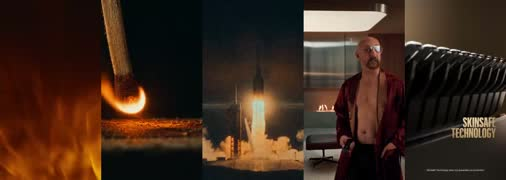
MANSCAPED
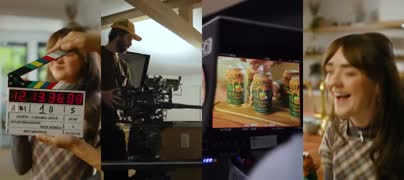
OlipopOwala
Real frames from live Meta ads in this style
2
UGC creator testimonial
Proven
A creator talks to camera on a phone about why the product works for them.
Meta: 90 of 549 ads, 24 brands, median 36 days live · Social and web: 38 mentions
Red Bull Sugarfree ideaFinals Week. A grad student, 2am in the library, tells us why she swapped her sugar drink for the silver can.
AI feasibility
High
Watch out
Ads that look AI-made get fewer clicks; realism of lo-fi phone footage is the whole game
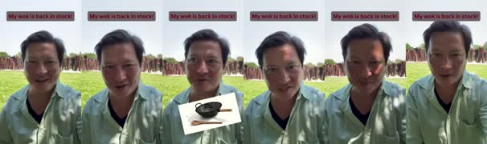
Our Place
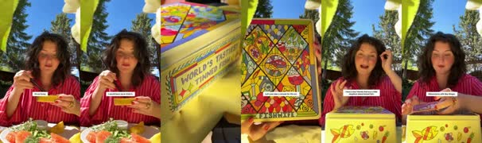
Fishwife
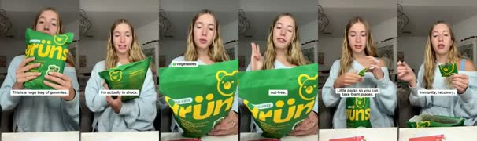
Gruns
Real frames from live Meta ads in this style
3
Creator routine / tutorial
Proven
A creator shows their routine or how they use the product (GRWM, morning routine, how-to).
Meta: 190 of 549 ads, 31 brands, median 29 days live · Social and web: 17 mentions
Red Bull Sugarfree idea5am Club. A trail runner's pre-dawn routine in 8 quick steps; the can is step 4, before the headlamp goes on.
AI feasibility
High
Watch out
None major; the #1 format by spend
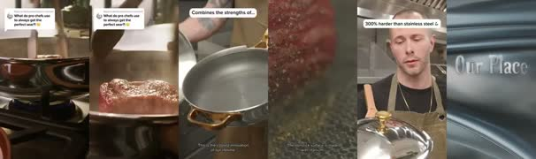
Our Place
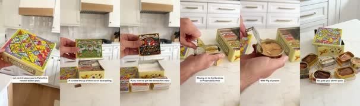
Fishwife
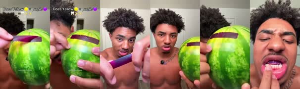
Hismile
Real frames from live Meta ads in this style
4
Unboxing / first impressions
Proven
The package arrives, gets opened, and the first reaction is the payoff.
Meta: 28 of 549 ads, 14 brands, median 20 days live · Social and web: 10 mentions
Red Bull Sugarfree ideaThe Drop. A cold case lands at a gaming team house the night before a tournament; first-sip reactions around the room.
AI feasibility
High
Watch out
Packaging must look right; the template generates branded outer packaging from the product image
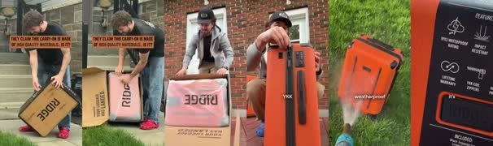
Ridge
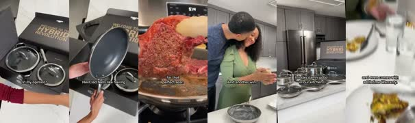
HexClad
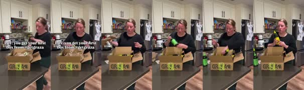
Graza
Real frames from live Meta ads in this style
5
Problem to solution / before-after
Proven
Name the pain, agitate it, show the product solving it.
Meta: 35 of 549 ads, 13 brands, median 68 days live · Social and web: 16 mentions
Red Bull Sugarfree ideaThe 3pm Wall. A designer's afternoon turns literally grey and slow-motion; one can and the colour and speed come back.
AI feasibility
High
Watch out
Claims ceiling: only page claims (alertness, less tiredness); no invented results
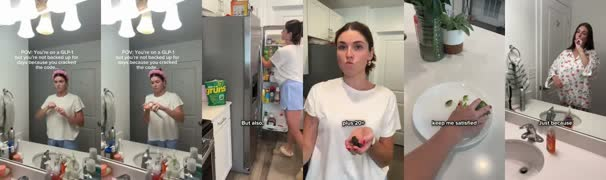
Gruns
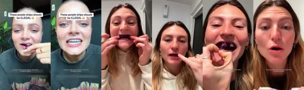
Hismile
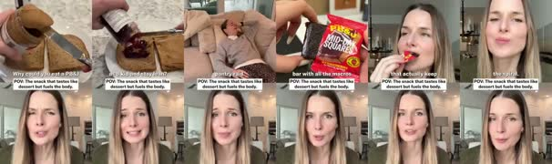
Mid-Day Squares
Real frames from live Meta ads in this style
6
Street interview
Proven
A host stops people on the street with a question; answers sell the product.
Meta: 2 of 549 ads, 2 brands, median 22 days live · Social and web: 15 mentions
Red Bull Sugarfree ideaCan You Tell? Blind sips on a campus quad: sugar or sugarfree? Nobody can tell.
AI feasibility
High
Watch out
Casting variety and natural crowd audio
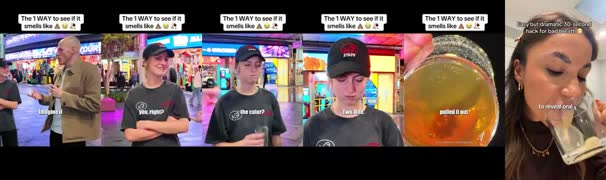
Hismile
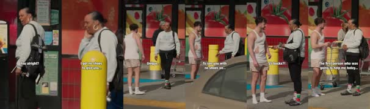
True Classic
Real frames from live Meta ads in this style
7
Podcast clip
Proven
A clip from a podcast-style conversation where the product comes up naturally.
Meta: 2 of 549 ads, 1 brands, median 44 days live · Social and web: 20 mentions
Red Bull Sugarfree ideaSend It Pod. Two climbing podcast hosts argue about the worst summit they ever tried; the can on the desk becomes the punchline.
AI feasibility
High (two people, one set)
Watch out
Top mention count; works best when the talk is genuinely interesting
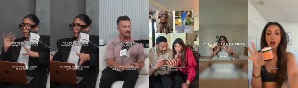
Arrae
Real frames from live Meta ads in this style
8
Skit / comedy sketch
Proven
A scripted comedic scene with actors; the product resolves the joke.
Meta: 34 of 549 ads, 9 brands, median 19 days live · Social and web: 8 mentions
Red Bull Sugarfree ideaSugar Police. An office has a sugar-detecting officer who raids every desk; the sugarfree can gets a salute.
AI feasibility
Medium (comic timing is hard for models)
Watch out
Timing; keep jokes visual, not wordplay
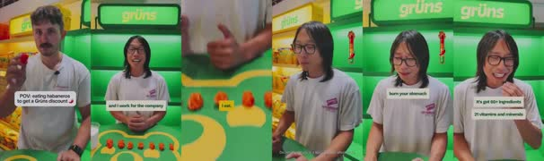
Gruns
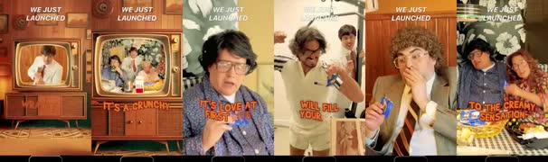
Mid-Day SquaresTrue Classic
Real frames from live Meta ads in this style
9
Pixar-style 3D animated story
Novelty AI with real numbers
A warm 3D animated short with a character and a mini story.
Meta: 4 of 549 ads, 3 brands, median 39 days live · Social and web: 16 mentions
Red Bull Sugarfree ideaThe Night Owl. A tiny owl lighthouse keeper who can't stay awake for the ships; the can keeps the light on.
AI feasibility
High
Watch out
The strongest sales evidence of any AI style ($80K profitable spend, 12% CTR claims)
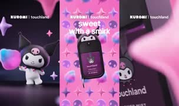
Touchland
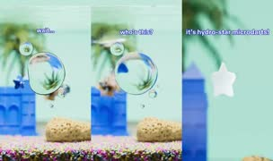
Starface
Real frames from live Meta ads in this style
10
Claymation
Novelty AI
Hand-made clay stop-motion look; tactile, charming, instantly different in feed.
Meta: 1 of 549 ads, 1 brands, median 28 days live · Social and web: 23 mentions
Red Bull Sugarfree ideaSnail Mail. A clay courier snail enters the city delivery race and wins.
AI feasibility
High
Watch out
Look variants (felt, crochet, LEGO) can be spun off inside this style
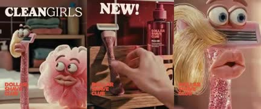
Dollar Shave Club
Real frames from live Meta ads in this style
11
Anime / manga
Novelty AI
Anime look with anime storytelling: power-ups, rivals, dramatic stills.
Meta: 0 of 549 ads, 0 brands · Social and web: 8 mentions
Red Bull Sugarfree ideaRookie Arc. A rookie street racer's tournament arc; the power-up moment is the can cracking open.
AI feasibility
High
Watch out
Strong with Gen Z, less universal; weaker evidence for D2C sales
12
Comic book / motion comic
Novelty AI
Panels, speech bubbles and halftone; the camera moves through the pages.
Meta: 3 of 549 ads, 1 brands, median 1 days live · Social and web: 8 mentions
Red Bull Sugarfree ideaCaptain 3pm. A superhero whose powers run out every afternoon, until issue #2.
AI feasibility
Medium (text inside panels must be added in post, not by the model)
Watch out
Speech bubbles and SFX lettering rendered in code, never by the model
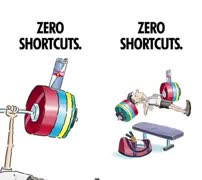
Red Bull
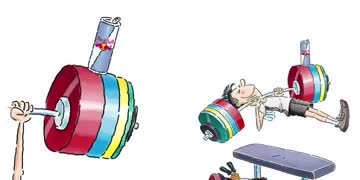
Red Bull
Real frames from live Meta ads in this style
13
CGI product hero / FOOH
Proven (studio) plus novelty (FOOH)
The product is the star: giant in a real city, splashes, drops, impossible physics.
Meta: 96 of 549 ads, 27 brands, median 28 days live · Social and web: 7 mentions
Red Bull Sugarfree ideaStampede. A giant can lands in a city plaza at dawn and the two bulls charge off the can down the avenue.
AI feasibility
High
Watch out
Product fidelity (label, shape) is the only thing that matters; strict QA
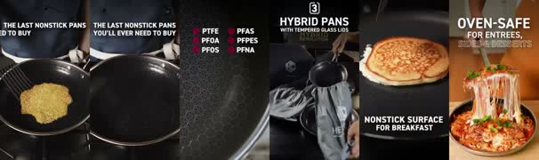
HexClad
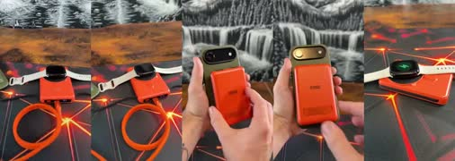
Ridge
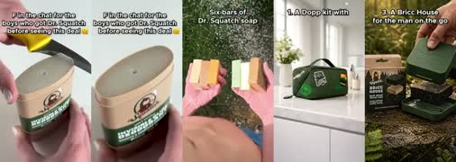
Dr Squatch
Real frames from live Meta ads in this style
14
Us vs them
Proven
Side by side against a generic rival or the old way.
Meta: 3 of 549 ads, 3 brands, median 55 days live · Social and web: 8 mentions
Red Bull Sugarfree ideaTwo Cans. Split screen: the sugar-crash version of a day vs the sugarfree version.
AI feasibility
High
Watch out
Never name a real competitor; the rival is always generic
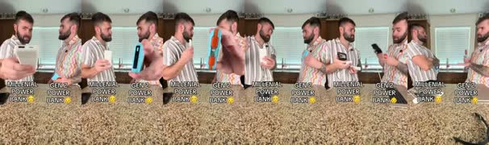
Ridge
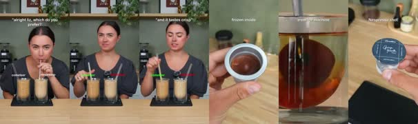
Cometeer
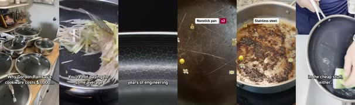
HexClad
Real frames from live Meta ads in this style
15
Talking objects
Novelty AI
Everyday objects come alive and talk; the product is a character.
Meta: not measured · Social and web: 7 mentions
Red Bull Sugarfree ideaFridge Politics. The fridge shelf holds an election; the soda, the juice and the silver can all campaign.
AI feasibility
High
Watch out
Works for any product because the product itself can talk
Reserves (swap any in): Song ad (high ROAS claims, heavy backlash), Founder story (needs a founder the buyer may not have), ASMR / satisfying, Lifestyle montage (#2 on Meta by volume, but no dialogue or story), 3D 'how it's made' explainer, Miniature / tilt-shift world, Retro VHS / infomercial parody, Fake breaking news, Text message / Notes app, Wes Anderson symmetric pastel.